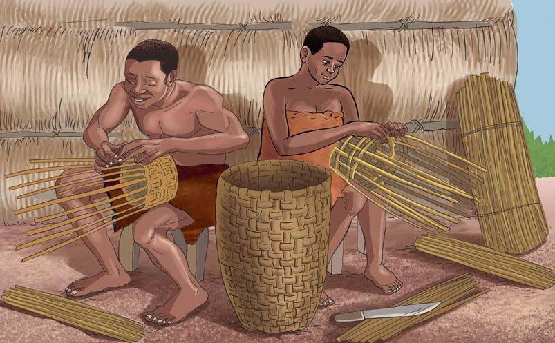
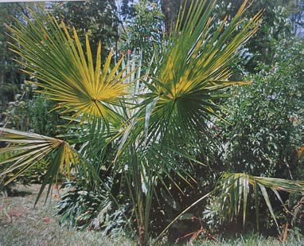
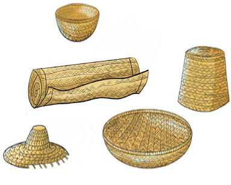

kisha kusukwa. Mfano, wa vitu vilivyotengenezwa ni nyungo, matenga, madema, viti na vikapu. Kielelezo namba 20, kinawasilisha sayansi na teknolojia ya ususi kwa kutumia mianzi.

Matenga na vikapu vilivyosukwa na mianzi vilitumika kubebea na kuhifadhia bidhaa mbalimbali. Vilevile, jamii zilifanya ususi wa vitu mbalimbali kwa kutumia ukili na miwaa. Kielelezo namba 21, kinawasilisha picha ya muwaa na bidhaa mbalimbali za ususi.


Kielelezo namba 21: Picha ya muwaa na bidhaa mbalimbali za ususi
66